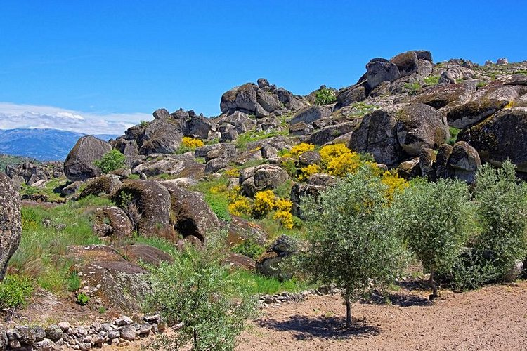
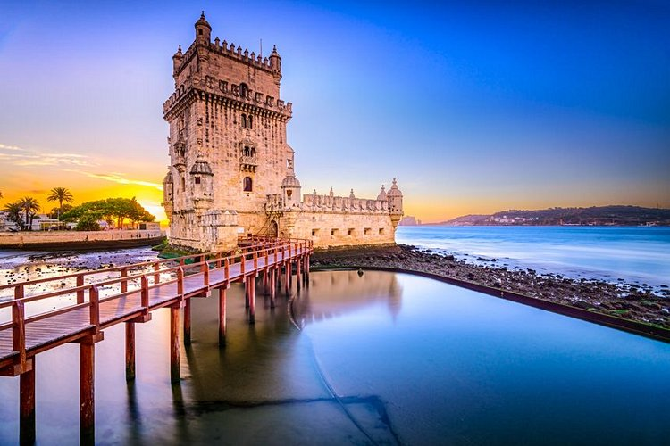
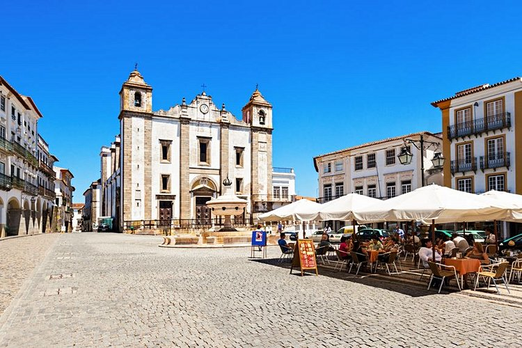
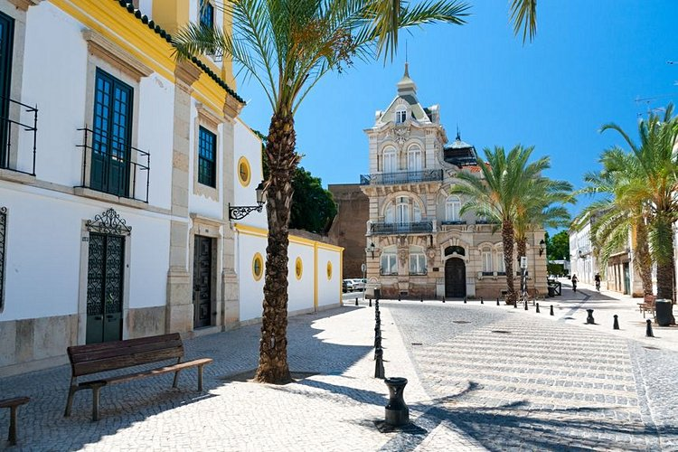

Le Douro est le fleuve qui traverse la ville. De nombreux ponts le traversent, offrant des panoramas tous plus beaux les uns que les autres sur Porto. Le plus célèbre de tous, le pont Dom Luis I est un pont métallique à deux niveaux conçu par un disciple de Gustave Eiffel pour relier le vieux Porto à Vila Nova de Gaia réputée pour ses caves à vin. D’autres ponts représentent également un intérêt architectural avec celui de la reine Maria Pia, conçu par Gustave Eiffel ou le pont de l’Infante. Plusieurs compagnies de bateaux que vous trouverez sur le quai de Ribeira ou à Vila Nova de Gaia proposent des excursions de moins d’une heure pour découvrir ses fameux ponts et pour un point de vue original sur les rives et la ville de Porto. On croise sur le Douro quelques bateaux chargés de tonneaux qui ne naviguent plus mais qui rappellent les caves à vin de Vila Nova de Gaia. Si vous disposez d’une journée, vous pourrez vous rendre jusqu’à Régua en bateau dans la vallée du Douro où visite et dégustation de vins sont au programme.
Parque natural da Serra da Estrela

Si vous aimez la nature, le Parque natural da Serra da Estrela est un passage incontournable. En plein cœur du Portugal, cette réserve protégée s’étend sur plus de 100 000 hectares. On y trouve le point le plus élevé du pays, la Torre (1993 mètres). De magnifiques randonnées, à pied ou à VTT, vous mèneront le long de la chaîne montagneuse, dans des forêts épaisses, au bord de lacs limpides et sur des plateaux rocailleux. Vous aurez peut-être la chance de rencontrer la faune variée qui vit dans le parc : loup, sanglier, renard, aigle royal, et même le cão de Serra da Estrela, un chien de berger local.
La Tour De Belém

La tour de Belém est sans conteste le symbole de Lisbonne. Elle aussi à l’initiative du roi Manuel 1er, elle fut bâtie entre 1515 et 1521 en l’honneur des navigateurs. La tour avait à l’époque plusieurs rôles : être un poste d’avant-garde, protéger l’entrée du port (aussi entrée de la ville) ainsi que le monastère des Hiéronymites, tout proche. Elle devint par la suite un phare puis une prison. Haute de 35 m et de quatre étages, elle se compose d’escaliers étroits, de tourelles et de balcons. Côté architecture, la tour de Belém est un subtil mélange entre l’art manuélin et mauresque.
Évora

Une des plus belles villes du Portugal, Évora est la deuxième cité contenant le plus de monuments historiques après Lisbonne. Il y fait bon vivre grâce à sa vie nocturne très animée : les restaurants et bars sont ouverts tard le soir en été. Question visites culturelles, ne manquez pas le temple de Diane, le mieux préservé de toute la péninsule ibérique avec ses majestueuses colonnades. L’aqueduc de l’Agua de Prata (« des eaux d’argent ») vaut le détour : ses superbes arches ont été intégrées harmonieusement aux habitations. L’architecture gothique de la Sé, la cathédrale d’Évora, est à admirer avant de monter en haut du clocher pour la vue panoramique sur les environs.
Faro

Faro est la ville la plus importante de l’Algarve et le point de départ de la plupart des touristes. Cette jolie cité en bord de mer vaut le coup que l’on y passe quelques heures, ne serait-ce que pour découvrir la Sé. La cathédrale de Faro est en effet un superbe monument aux faux airs de château. Curiosité : la Capela dos Ossos est une chapelle renfermant plus de 1000 squelettes dont les ossements décorent les murs.